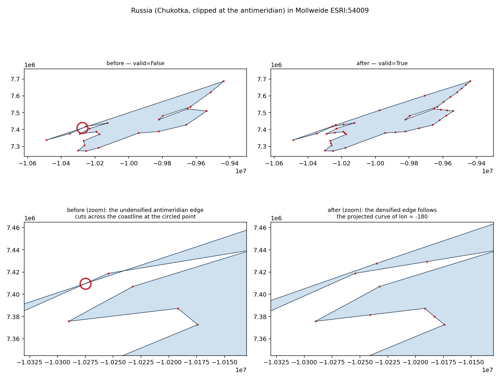
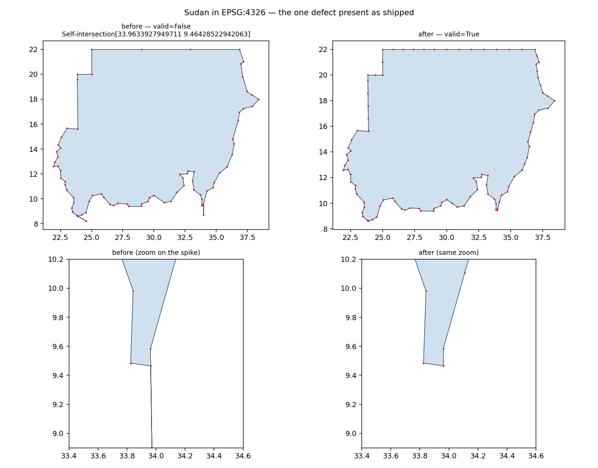
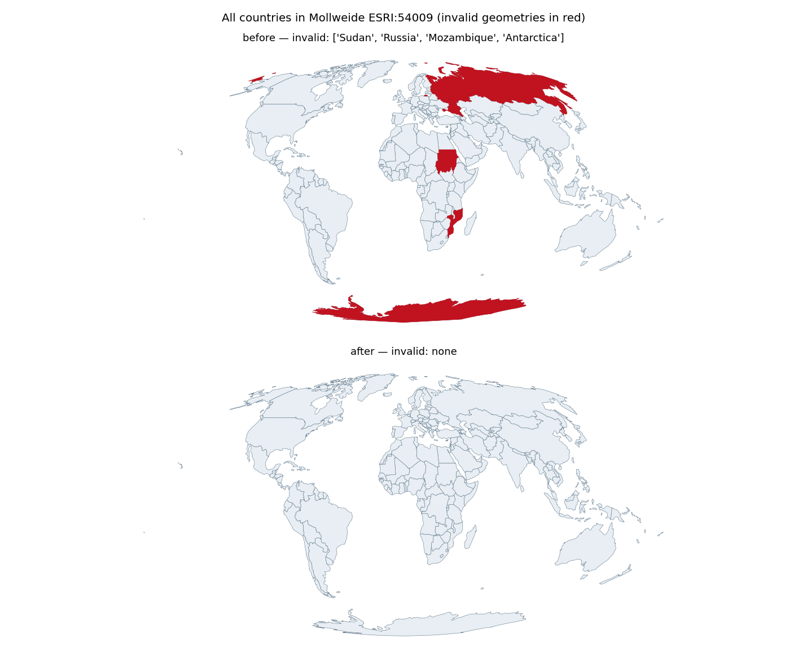

Sudan was invalid as shipped; Russia, Mozambique and Antarctica became invalid only after equal-area reprojection, breaking union_all. Check that the repaired outlines are unchanged apart from added vertices.
Outlines must be unchanged apart from added vertices. The repair inserts collinear vertices (exact in EPSG:4326) and drops two degenerate features: the zero-area spike in Sudan and a 0.5 m sliver in Mozambique. Nothing else about the boundaries should move.
3.2e-07. Largest relative: Israel -16.4 km2, Netherlands +24.6 km2, Norway +209.4 km2. Largest absolute: Russia -524.0 km2, Algeria -496.7 km2, Mauritania +267.3 km2. These come from densification: the densified outline follows the projected curve instead of cutting the chord, so the areas are more faithful, not less.
than 0.097 km2 (Sudan).
Fiji under an LAEA centred near its antipode, and Russia and Antarctica under a US-centred Albers applied worldwide, remain invalid. Those are projection domain limits, not data defects.

The failure that started this. Chukotka is clipped at lon -180 and closed with a single straight edge; reprojection maps vertices, not edges, so in Mollweide that chord cuts across the coastline (circled). Densifying makes the edge follow the projected curve.

The only defect present as shipped, and CRS-independent: the exterior ring doubles back on itself into a zero-area spike. Visible in the zoom as a line with no width.

Every country in Mollweide, invalid ones in red.